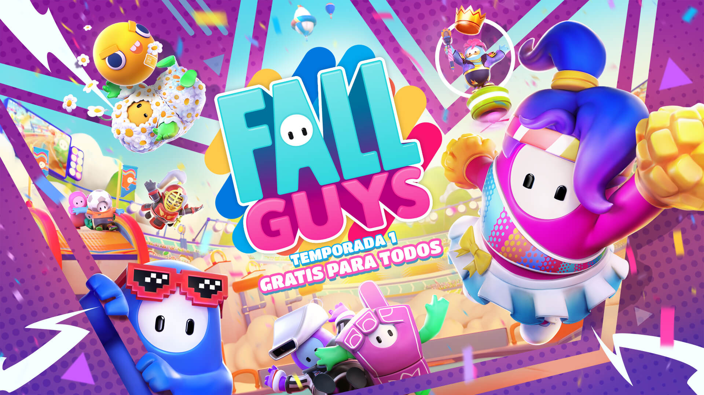

FALL GUYS
¿Estás cansado de ver tu línea de tiempo en YouTube llena de Fall Guys, pero no saber de qué va? Te lo contamos aquí. Lo más seguro es que este fin de semana tu página de recomendaciones en YouTube se haya visto invadida por video protagonizados por figuras parecidas a los ‘Minions’. El responsable es el nuevo fenómeno de los videojuegos, ‘Fall Guys’ que se ha tomado por completo la mayoría de streams en plataformas como Twitch (al momento de este artículo es uno de los títulos más populares con más de 120.000 espectadores). Pero, como sabemos que no hay suficiente tiempo para sintonizar todas las transmisiones, en ENTER.CO te damos un resumen exprés a qué es ‘Fall Guys’ y porque, quizás, deberías probarlo.
¿Qué es Fall Guys?
La mejor manera de describirlo es como el hijo entre ‘PUBG’ y ‘Mario Party’. El título pone a 60 jugadores en una competencia por ser el último sobreviviente en una serie de mini juegos. Como todo buen battle royale, el objetivo es ser la última persona en sobrevivir o, en este caso, en ganar cada una de las pruebas de cada ronda.
¿Por qué es tan popular?
Aquí cada persona dará su opinión, pero la razón básica es porque los Battle royale son bastante entretenidos de ver y ‘Fall Guys’ cambia su concepto al integrar mini juegos. Usualmente el problema de títulos como ‘PUBG’ o ‘Fortnite’ es que, si no estás interesado en los shooters, su propuesta no engancha lo suficiente para adaptarse a su repetición. Y, por si las dudas: sí, ‘Fall Guys’ es bastante popular. Su desarrollador hoy compartió los números e informó que en su primer fin de semana el título consiguió dos millones de jugadores, solo en Steam.
PERSONAJES DE FALL GUYS